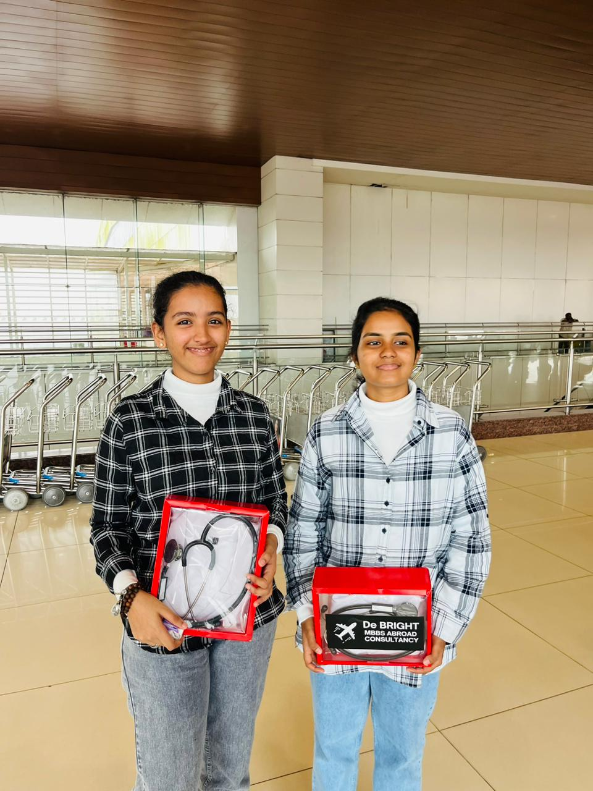
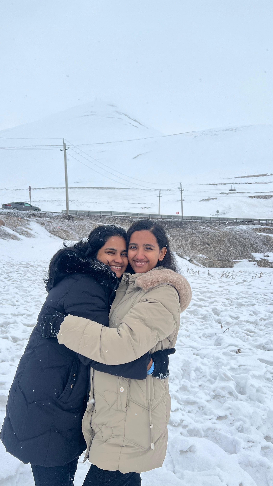

THE VIDEO IS JUST A RANDOM VIDEO, OUR MEMORY OFC...THE PICS? FROM WHERE WE STARTED AND YOUR DREAM OF WANTING TO EXPERIENCE SNOW COMING TRUE...AND THE SONG??? IK IT AINT SUITING A BDAY WEBSITE BUT YEAH JUST TO SHOW MUCH POWERFUL AND CAPABLE YOU ARE, I NEEDED THIS. SORRYYY
Alku’s birthday countdown · day 11
The Alku Awards
Eight days to go, my girl.
before we begin
today's soundtrack
ik it aint suiting but helll yeahhh I'm proud of you my baby girlll!
a little word for you
A verse hidden in the margins
turn the page ♡
little notes♡tiny reminders
“I have the strength for everything through him who empowers me.”
PHILIPPIANS 4:13
So alku, you are able to do everything because god is with you... And dont you dare to consider yourself small because thats how much eeso ninde kai pidich oronn cheypikkunnuu... You are his favchild!!
God didn't make you ordinary, bbg.
proof of our lore


a very official announcement
The tiny duck has something to say
Alkuuu is amazingg
a letter for you
8 DAYS. JUST 8 DAYS LEFT...
Tap the tiny envelope.
before you go
Tell me anything, Alku.
Anything you want to tell me about today's page ♡